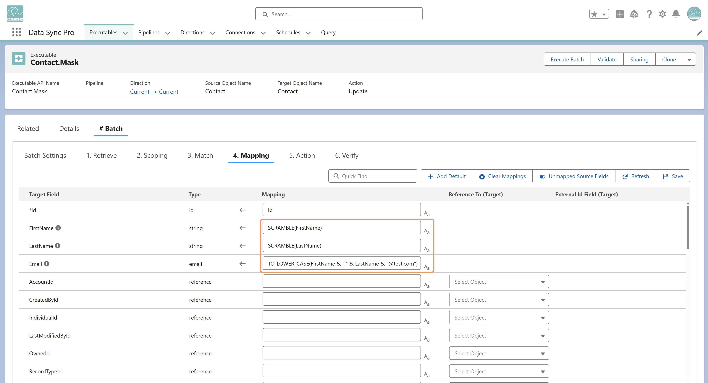

Use masking functions in an Executable's Field Mappings to generate masked values during execution. DSP provides functions such as:
RANDOMIZE — Randomize an existing value (e.g., RANDOMIZE(Birthdate)).RANDOM_ITEM — Pick a random value from a defined list (e.g., RANDOM_ITEM("United States", "Canada", "Germany", ...)).SCRAMBLE — Shuffle the characters of an existing value (e.g., SCRAMBLE(FirstName)).These functions are only supported in sandbox environments to prevent accidental modification of production data.
You can also build custom masking formulas — for example, generating obfuscated email addresses:
FirstName & "." & LastName & "@test.com"
For the full set of masking and transformation functions, see the Transformation documentation.
